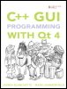

C++ GUI Programming with Qt 4
By
Jasmin Blanchette
,
Mark Summerfield
...............................................
Publisher:
Prentice Hall
Pub Date:
June 21, 2006
Print ISBN-10:
0-13-187249-4
Print ISBN-13:
978-0-13-187249-3
Pages:
560
Table of Contents
|
Index
Copyright
Foreword
Preface
Acknowledgments
A Brief History of Qt
Part 1: Basic Qt
Chapter 1. Getting Started
Hello Qt
Making Connections
Laying Out Widgets
Using the Reference Documentation
Chapter 2. Creating Dialogs
Subclassing QDialog
Signals and Slots in Depth
Rapid Dialog Design
Shape-Changing Dialogs
Dynamic Dialogs
Built-in Widget and Dialog Classes
Chapter 3. Creating Main Windows
Subclassing QMainWindow
Creating Menus and Toolbars
Setting Up the Status Bar
Implementing the File Menu
Using Dialogs
Storing Settings
Multiple Documents
Splash Screens
Chapter 4. Implementing Application Functionality
The Central Widget
Subclassing QTableWidget
Loading and Saving
Implementing the Edit Menu
Implementing the Other Menus
Subclassing QTableWidgetItem
Chapter 5. Creating Custom Widgets
Customizing Qt Widgets
Subclassing QWidget
Integrating Custom Widgets with Qt Designer
Double Buffering
Part II: Intermediate Qt
Chapter 6. Layout Management
Laying Out Widgets on a Form
Stacked Layouts
Splitters
Scrolling Areas
Dock Widgets and Toolbars
Multiple Document Interface
Chapter 7. Event Processing
Reimplementing Event Handlers
Installing Event Filters
Staying Responsive During Intensive Processing
Chapter 8. 2D and 3D Graphics
Painting with QPainter
Painter Transformations
High-Quality Rendering with QImage
Printing
Graphics with OpenGL
Chapter 9. Drag and Drop
Enabling Drag and Drop
Supporting Custom Drag Types
Clipboard Handling
Chapter 10. Item View Classes
Using the Item View Convenience Classes
Using Predefined Models
Implementing Custom Models
Implementing Custom Delegates
Chapter 11. Container Classes
Sequential Containers
Associative Containers
Generic Algorithms
Strings, Byte Arrays, and Variants
Chapter 12. Input/Output
Reading and Writing Binary Data
Reading and Writing Text
Traversing Directories
Embedding Resources
Inter-Process Communication
Chapter 13. Databases
Connecting and Querying
Presenting Data in Tabular Form
Implementing MasterDetail Forms
Chapter 14. Networking
Writing FTP Clients
Writing HTTP Clients
Writing TCP ClientServer Applications
Sending and Receiving UDP Datagrams
Chapter 15. XML
Reading XML with SAX
Reading XML with DOM
Writing XML
Chapter 16. Providing Online Help
Tooltips, Status Tips, and "What's This?" Help
Using QTextBrowser as a Simple Help Engine
Using Qt Assistant for Powerful Online Help
Part III: Advanced Qt
Chapter 17. Internationalization
Working with Unicode
Making Applications Translation-Aware
Dynamic Language Switching
Translating Applications
Chapter 18. Multithreading
Creating Threads
Synchronizing Threads
Communicating with the Main Thread
Using Qt's Classes in Secondary Threads
Chapter 19. Creating Plugins
Extending Qt with Plugins
Making Applications Plugin-Aware
Writing Application Plugins
Chapter 20. Platform-Specific Features
Interfacing with Native APIs
Using ActiveX on Windows
Handling X11 Session Management
Chapter 21. Embedded Programming
Getting Started with Qtopia
Customizing Qtopia Core
Appendix A. Installing Qt
A Note on Licensing
Installing Qt/Windows
Installing Qt/Mac
Installing Qt/X11
Appendix B. Introduction to C++ for Java and C# Programmers
Getting Started with C++
Main Language Differences
The Standard C++ Library
About the Authors
Production
Index
|